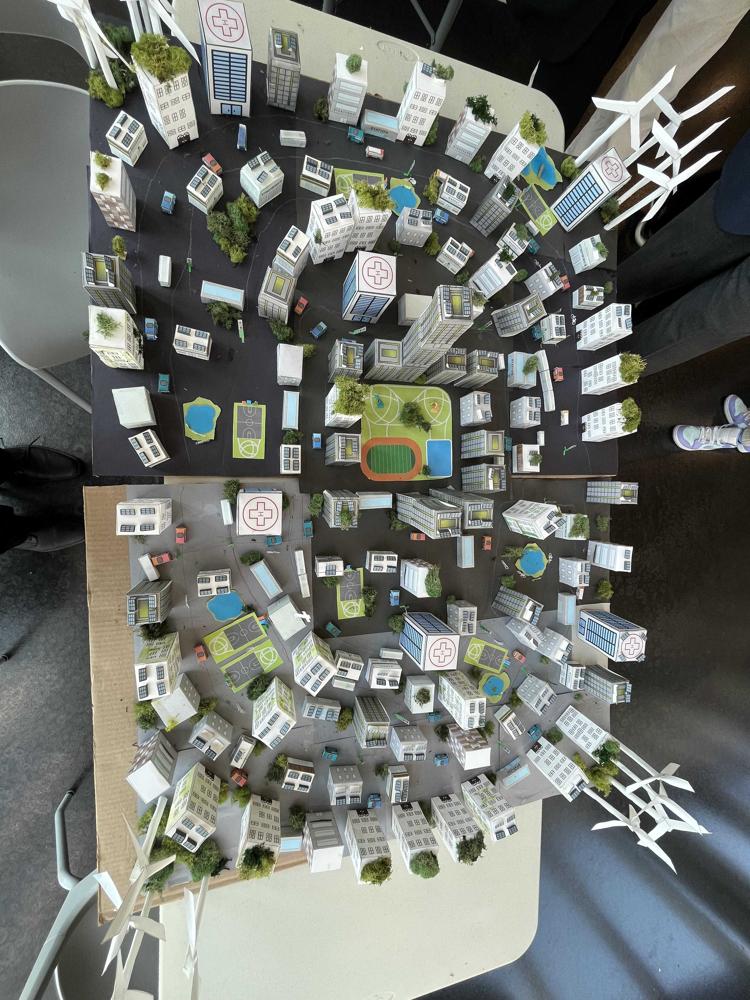

Urban planning
Studied the relationship between street layout, land use, density, and daily travel. The research helped the team understand why city form has a direct effect on congestion and accessibility.
RESEARCH / LA METRO
During my eight-week LA Metro internship, I worked as a Researcher and Team Representative on a team tasked with designing and developing an entire green smart city.
THE PROJECT
Our eight-week project focused on building a city model around greener infrastructure, stronger public transportation, and planning choices that could reduce traffic and transit delays. Los Angeles served as our main reference point because its transportation challenges clearly showed the effects of car-centered development.
As one of the team's researchers, I studied urban planning, road and highway design, public transportation methods and systems, zoning laws, and parking requirements. My goal was to connect each topic back to the way people move through a city and identify planning decisions that could create more transportation options.
Studied the relationship between street layout, land use, density, and daily travel. The research helped the team understand why city form has a direct effect on congestion and accessibility.
Compared road networks and public transportation systems, including how route coverage, service frequency, and dedicated transit space affect whether residents can choose an alternative to driving.
Examined how separated land uses and parking minimums can spread destinations farther apart, consume valuable land, and make car travel feel necessary for even short daily trips.
RESEARCH FINDINGS
I selected the comparisons that most directly informed the model rather than treating the research as a collection of disconnected statistics.
Our research found that an average of about 35 minutes per day is lost waiting in traffic, showing the daily cost of a transportation system centered around cars.
Our research found that 70% of Americans use a car for trips under one mile, reinforcing the need for walkable neighborhoods and useful alternatives for short travel.
The research compared LA bus arrivals approaching 15-minute intervals with a Netherlands example where buses arrived every two to five minutes on dedicated transit space.
The final direction centered on mixed-use zoning, removing parking minimums, expanding transit coverage and frequency, and reducing oversized highway infrastructure.
PHYSICAL MODEL
Once the research was assembled, our team built a physical model that demonstrated the planning choices we believed could reduce traffic and transit delays. The city used a circular network inspired by Amsterdam, bringing destinations closer together while creating more direct connections between neighborhoods, services, and transportation.

MODEL DESIGN
A connected circular layout created multiple paths across the city instead of forcing movement through a small number of major corridors.
Housing, services, workplaces, recreation, and transit were placed closer together to reduce the need for long car trips.
Transit stations and routes were integrated throughout the model so public transportation functioned as part of the city rather than an addition to it.
Parks, planted areas, renewable-energy features, and community spaces supported the environmental goals of the smart city concept.
TEAM REPRESENTATIVE
At the end of the internship, our team presented the research findings and physical city model to city officials. As one of the team representatives, I helped communicate the transportation problems we studied, the planning choices behind our design, and the way those choices were represented in the model.
This role required me to move beyond collecting information and explain the team's work as one connected proposal. It strengthened my ability to organize technical research, speak for a collaborative project, and make complex planning ideas understandable to a broader audience.
TOOLS & METHODS
The project combined written research, collaborative concept development, physical model building, and a final presentation.